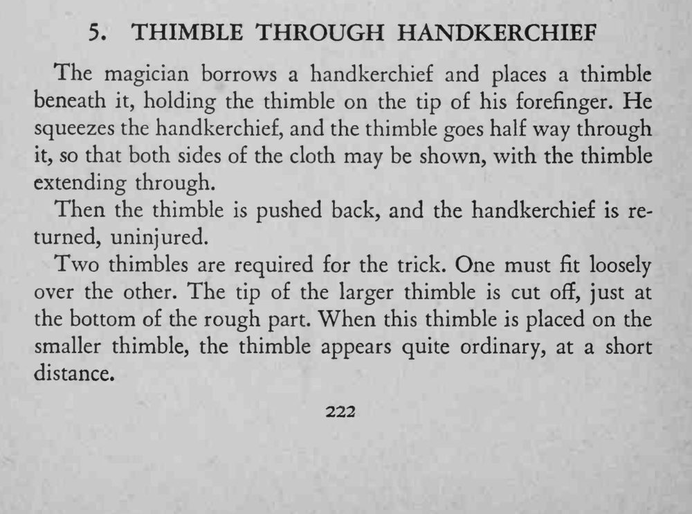
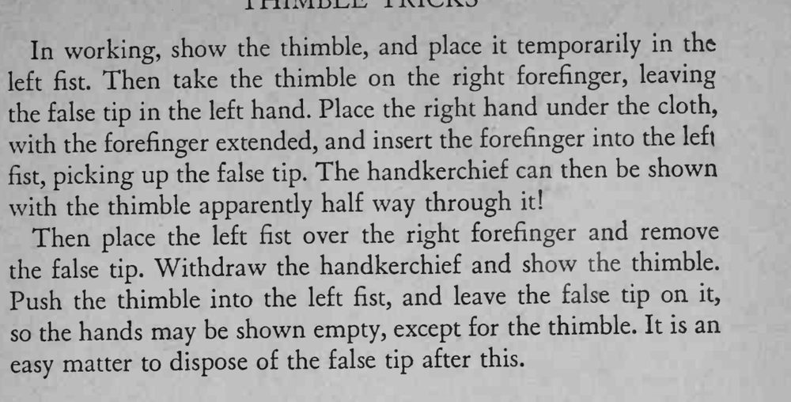

拇指套顶在手帕下面，用力一挤，拇指套竟穿透手帕露出半截；再一推，拇指套回到原处，手帕完好无损。
剪口要在粗糙底部、假尖端套上后看不出破绽，挤手帕的力度要稳。


The magician borrows a handkerchief and places a thimble beneath it, holding the thimble on the tip of his forefinger. He squeezes the handkerchief, and the thimble goes half way through it, so that both sides of the cloth may be shown, with the thimble extending through. Then the thimble is pushed back, and the handkerchief is returned, uninjured. Two thimbles are required for the trick. One must fit loosely over the other. The tip of the larger thimble is cut off, just at the bottom of the rough part. When this thimble is placed on the smaller thimble, the thimble appears quite ordinary, at a short distance. In working, show the thimble, and place it temporarily in the left Then take the thimble on the right forefinger, leaving fist. the false tip in the left hand. Place the right hand under the cloth, with the forefinger extended, and insert the forefinger into the left picking up the false tip. The handkerchief can then be shown fist, with the thimble apparently half way through it! Then place the left fist over the right forefinger and remove the false tip. Withdraw the handkerchief and show the thimble. Push the thimble into the left fist, and leave the false tip on it, so the hands may be shown empty, except for the thimble. It is an easy matter to dispose of the false tip after this.